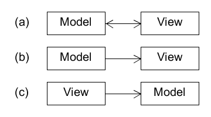

Graphics libraries are often designed to take over control of your program. There is a danger that the graphics library may overly influence the project design, and many developers fall into this trap. So it is important to sort out straight away the relationship of the graphics to the rest of the project.
How should a project with graphics be designed? What is the simplest thing that works properly? There are various design patterns which apply, but they boil down to three basic possibilities:
The model is the collection of non-graphical classes representing the logic of the project, and the view is the collection of graphics-related classes.
Possibility (a) corresponds roughly to design patterns such as MVP or MVA. It can be ruled out straight away for this project, because of the obvious cyclic dependencies.
Possibility (b) corresponds roughly to design patterns such as MVC or MVVM. It seems natural, because it corresponds to the idea of creating data first, and then displaying it afterwards. A disadvantage for agile development is that everything depends on graphics, making it awkward to do unit testing on the model. For that reason, it is ruled out for this project.
Possibility (c) doesn't appear to correspond to any of the usual design patterns. Yet it is the most common, because this is the way high-level graphics libraries are typically designed to be used. It is the clear winner for this project. (An interesting variation on approach (c), not explored here, is to arrange for some objects in the model to draw themselves.)
So, the wanderer framework is divided into model components and
view components, with the model not depending on the view.
Development can begin with the model and its unit testing, while leaving the
view until later.